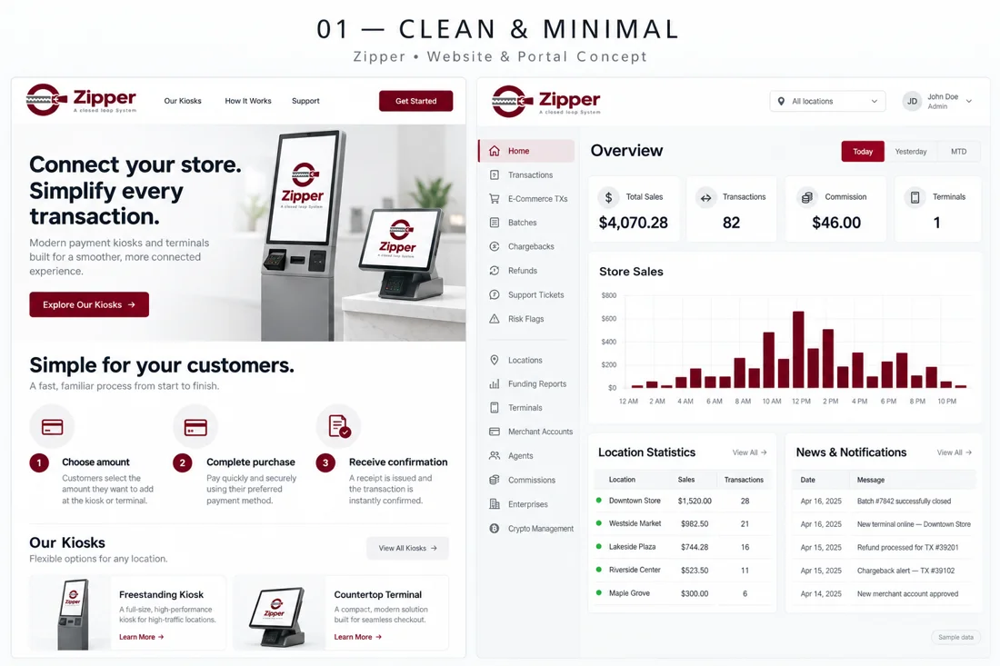

01 / LIGHT & FOCUSED
Clean & Minimal
White space, quiet gray surfaces and considered burgundy accents. A clear, approachable experience.
ONE BRAND. THREE DIRECTIONS.
Explore three complete website and dashboard experiences. Each direction brings a different visual character to the same Zipper identity.